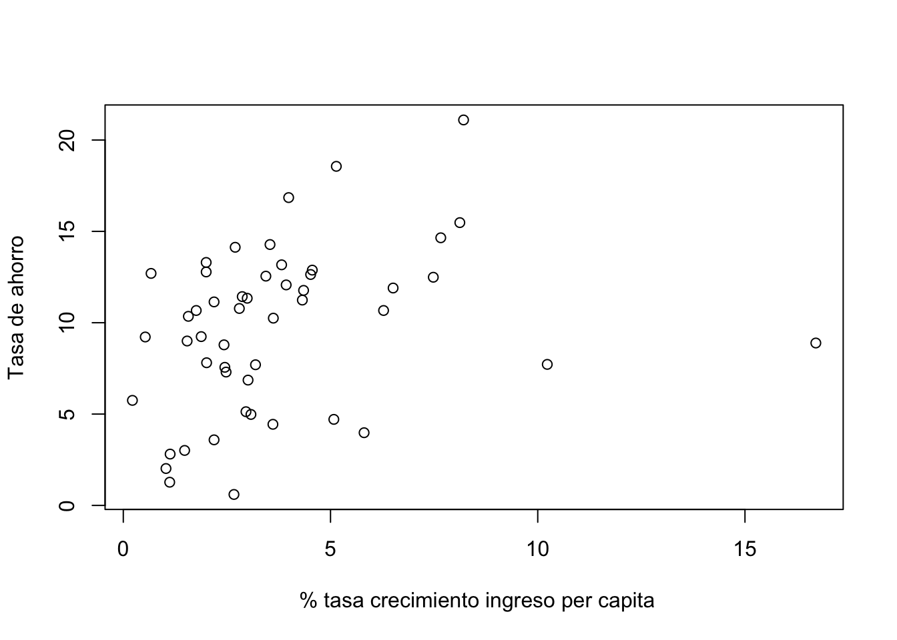

library(faraway)Warning: package 'faraway' was built under R version 4.1.2attach(savings)library(faraway)Warning: package 'faraway' was built under R version 4.1.2attach(savings)ahorro<-savings[,-(2:4)]
ahorro sr ddpi
Australia 11.43 2.87
Austria 12.07 3.93
Belgium 13.17 3.82
Bolivia 5.75 0.22
Brazil 12.88 4.56
Canada 8.79 2.43
Chile 0.60 2.67
China 11.90 6.51
Colombia 4.98 3.08
Costa Rica 10.78 2.80
Denmark 16.85 3.99
Ecuador 3.59 2.19
Finland 11.24 4.32
France 12.64 4.52
Germany 12.55 3.44
Greece 10.67 6.28
Guatamala 3.01 1.48
Honduras 7.70 3.19
Iceland 1.27 1.12
India 9.00 1.54
Ireland 11.34 2.99
Italy 14.28 3.54
Japan 21.10 8.21
Korea 3.98 5.81
Luxembourg 10.35 1.57
Malta 15.48 8.12
Norway 10.25 3.62
Netherlands 14.65 7.66
New Zealand 10.67 1.76
Nicaragua 7.30 2.48
Panama 4.44 3.61
Paraguay 2.02 1.03
Peru 12.70 0.67
Philippines 12.78 2.00
Portugal 12.49 7.48
South Africa 11.14 2.19
South Rhodesia 13.30 2.00
Spain 11.77 4.35
Sweden 6.86 3.01
Switzerland 14.13 2.70
Turkey 5.13 2.96
Tunisia 2.81 1.13
United Kingdom 7.81 2.01
United States 7.56 2.45
Venezuela 9.22 0.53
Zambia 18.56 5.14
Jamaica 7.72 10.23
Uruguay 9.24 1.88
Libya 8.89 16.71
Malaysia 4.71 5.08sr= tasa de ahorro (ahorros personales dividido por el ingreso disponible) ddpi= porcentaje de la tasa de crecimiento del ingreso disponible per capita
plot(sr~ddpi, xlab=" % tasa crecimiento ingreso per capita", ylab="Tasa de ahorro")
¿Qué se puede concluir?
n<-dim(ahorro)[1]
X<-as.matrix(cbind(rep(1,n),ahorro[,2]))
pred<-dim(X)[2]n[1] 50X [,1] [,2]
[1,] 1 2.87
[2,] 1 3.93
[3,] 1 3.82
[4,] 1 0.22
[5,] 1 4.56
[6,] 1 2.43
[7,] 1 2.67
[8,] 1 6.51
[9,] 1 3.08
[10,] 1 2.80
[11,] 1 3.99
[12,] 1 2.19
[13,] 1 4.32
[14,] 1 4.52
[15,] 1 3.44
[16,] 1 6.28
[17,] 1 1.48
[18,] 1 3.19
[19,] 1 1.12
[20,] 1 1.54
[21,] 1 2.99
[22,] 1 3.54
[23,] 1 8.21
[24,] 1 5.81
[25,] 1 1.57
[26,] 1 8.12
[27,] 1 3.62
[28,] 1 7.66
[29,] 1 1.76
[30,] 1 2.48
[31,] 1 3.61
[32,] 1 1.03
[33,] 1 0.67
[34,] 1 2.00
[35,] 1 7.48
[36,] 1 2.19
[37,] 1 2.00
[38,] 1 4.35
[39,] 1 3.01
[40,] 1 2.70
[41,] 1 2.96
[42,] 1 1.13
[43,] 1 2.01
[44,] 1 2.45
[45,] 1 0.53
[46,] 1 5.14
[47,] 1 10.23
[48,] 1 1.88
[49,] 1 16.71
[50,] 1 5.08pred[1] 2Y<-ahorro[,1]
Y [1] 11.43 12.07 13.17 5.75 12.88 8.79 0.60 11.90 4.98 10.78 16.85 3.59
[13] 11.24 12.64 12.55 10.67 3.01 7.70 1.27 9.00 11.34 14.28 21.10 3.98
[25] 10.35 15.48 10.25 14.65 10.67 7.30 4.44 2.02 12.70 12.78 12.49 11.14
[37] 13.30 11.77 6.86 14.13 5.13 2.81 7.81 7.56 9.22 18.56 7.72 9.24
[49] 8.89 4.71b<-solve(t(X)%*%X)%*%t(X)%*%Y
b [,1]
[1,] 7.883021
[2,] 0.475830mod<-lm(sr~ddpi)
summary(mod)
Call:
lm(formula = sr ~ ddpi)
Residuals:
Min 1Q Median 3Q Max
-8.5535 -3.7349 0.9835 2.7720 9.3104
Coefficients:
Estimate Std. Error t value Pr(>|t|)
(Intercept) 7.8830 1.0110 7.797 4.46e-10 ***
ddpi 0.4758 0.2146 2.217 0.0314 *
---
Signif. codes: 0 '***' 0.001 '**' 0.01 '*' 0.05 '.' 0.1 ' ' 1
Residual standard error: 4.311 on 48 degrees of freedom
Multiple R-squared: 0.0929, Adjusted R-squared: 0.074
F-statistic: 4.916 on 1 and 48 DF, p-value: 0.03139